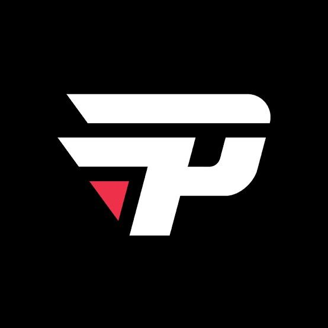

 PaiN Gaming é uma equipe brasileira de esportes eletrônicos, fundada em 2010 como time de DotA por Arthur "PAADA" Zarzur, ex-jogador profissional do game. Atualmente, a organização possui equipes que disputam Free Fire, League of Legends, Rainbow Six Siege, Counter-Strike: Global Offensive, bem como é representada por jogadores de Hearthstone e Clash Royale. Além do Dota, a paiN já foi campeã brasileira de Smite e também no League of Legends, três vezes. Em 2017, a Pain Gaming anunciou seu retorno oficial ao Dota 2, voltando a suas origens.
A equipe é uma das mais tradicionais nos esportes eletrônicos do Brasil. A popularidade também é grande nas redes sociais, onde a organização possui mais curtidas que páginas de tradicionais clubes de futebol. Foi a primeira equipe latino-americana a ter uma gaming house e a primeira organização mundial de e-sports a ter um programa de sócio-torcedor, que chegou a ter adesão maior que a de times da Série A. A equipe possui atualmente 3 títulos no cenário competitivo no Campeonato Brasileiro de League of Legends e seus rivais são INTZ e-Sports, Flamengo Esports e KaBuM!.
 O início da organização paiN Gaming foi no Defense of the Ancients, mod de Warcraft III. O elenco inicial era composto de jogadores advindos da CNB e da GameWise.
No primeiro jogo, conseguiram títulos nacionais como a Liga Nacional de DotA, a Masters Series de Curitiba e a SGL Cup. Tiveram no elenco, por um tempo,
Felipe "brTT" Gonçalves, que viria a ser um dos destaques da organização no LoL. Seus jogadores tiveram acesso à versão beta do Dota 2
e migraram à nova edição do jogo.
O início da organização paiN Gaming foi no Defense of the Ancients, mod de Warcraft III. O elenco inicial era composto de jogadores advindos da CNB e da GameWise.
No primeiro jogo, conseguiram títulos nacionais como a Liga Nacional de DotA, a Masters Series de Curitiba e a SGL Cup. Tiveram no elenco, por um tempo,
Felipe "brTT" Gonçalves, que viria a ser um dos destaques da organização no LoL. Seus jogadores tiveram acesso à versão beta do Dota 2
e migraram à nova edição do jogo.
No Dota 2, a equipe foi a mais vitoriosa no Brasil. Venceu as três edições da Brasil Game Cup entre 2014 e 2016, a X5 Mega Arena de 2014 e 2015 e o primeiro split da Xtreme League 2015. No cenário internacional, conseguiu resultados expressivos para equipes brasileiras, como a 16ª colocação na Razer Global Challenge e na MYM Prime Defending, sexta colocação na GosuCup e quarta colocação no Bigfoot Dota Summer Cup. No entanto, sempre caiu nas fases de grupos ou nas primeiras eliminatórias. Em 2016, a equipe classificou-se para sua primeira competição presencial no exterior, WESG Global Grand Finals, mas, por desentendimento entre a organização e os jogadores, a divisão foi encerrada e os e-atletas foram dispensados e disputaram a competição como Kingao+4.